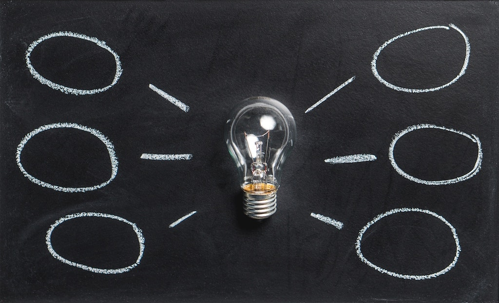

About the developer
Student of Noroff School of Technology and Digital Media. Currently living in Oslo. Love to dive into design and user interface. Have previous worked a lot with fashion and been a brand manager for FILA. I have a big interest for colors, design aspects and photography
Education
Noroff School of Technology and Digital Media
Skills
Design UI/UX Interaction Design. HTML, CSS, Javascript Frameworks, Bootstrap, Sass Headless CMS Wordpress, Strapi
Work experience
Group project with fellow Noroff students. E-commerce site for semester project.

something about the project
something about the project
something about the project